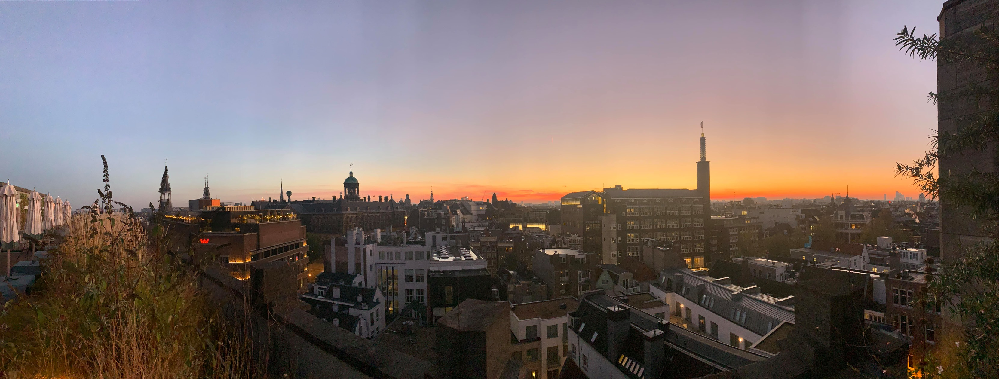

Banyuhay
Finding a New Home: Best Countries to migrate
During May, after the election, I did consider if given a chance to
migrate out of the country, which would it be? So since I was also testing
out my Data Science Skills, I did a survey that encompassed the criteria
that I will make and also accounts me as a Filipino, since there are laws
and requirements that made my nationality become a disadvantage and
sometimes an advantage (as I discovered in the process of making this
survey). At least speaking for the naturalization criteria, some countries
have advantages for Filipinos.
How did I choose?
For this survey I did, I listed a “Grand Criteria” that I considered in
choosing a country to migrate to. First, I collected indexes such as
corruption index, democracy index, quality of life index or any measurable
metric. From that I deduced to just having the top 20 countries in my
list. Now, one by one I read a brief summary of each country’s
naturalization laws, a bit of their work culture, the policies and
services these countries have made by their government. If there are major
deviations from my criteria, I discarded that country and moved on to the
next. All in all, I have 7 honorable mentions and 3 countries that have
fulfilled the criteria I made.
"The Grand Criteria"
01. Relaxed Naturalization
This criteria determines
whether the country has a relaxed, and achievable way of gaining
citizenship. With this right, you can vote, permanently settle, and among
other privileges a citizen holds in that country.
By means of
achievable, and relaxed, the requirements to be naturalized are not too
difficult to discourage ever considering it. This includes requirements
such as having sufficient proficiency in the national language of that
country, realistic continuous periods of staying, and other test
requirements imposed by their government.
02. Healthy Job Market and Labor Law
A healthy labor law accounts for generous paid leaves,
including vacation and sick leave, healthy length of working hours
(approximately 40 hours per week), and number of opportunities to get a
living wage and even double the minimum wage. So most countries that are
initially considered were dropped off due to their toxic hustle work
culture and exploitative labor laws which often overworks people, and does
not pay a living wage among other considerations.
03. Thriving Democratic Governments
This metric is measured through the corruption and democracy
index from all countries in the world. These indexes measure how healthy
the governments each country has by fulfilling criterias that are
hallmarks in a thriving democracy, this includes having a multi-party
system, accessible voter rights, and other criterias listed. Likewise, for
the corruption index, each country is graded for how prevalent graft and
corruption in their countries. Its criteria also includes freedom of
press, and reports from Commision on Human Rights. Note that the data used
for the democracy and corruption index is based from its 2021 release.
04. Great Quality of Life
From not just the quality of life index, the GDP per capita, the consumer
price index, and having a strong welfare state, policies were considered
for the criteria of great quality of life.
The quality of life
index covers the overall life expectancy and life literacy of each
country. This index gives insight on how strong and how well-made a
country’s healthcare and education is built.
For GDP per
capita credits the average salary of a person earns in that country and
usually whether a country realistically can provide a living wage or
beyond it.
Consumer price index accounts for the inflation a
country experiences and how it affects the power of its citizens to
purchase basic goods and services like utilities and food.
Moreover, having a strong welfare state pertains to services
and programs made by governments to help its citizens to have great
quality of life. An example of this is having unemployment salaries until
the person gets to find another job, a living wage that is frequently
adjusted with the country’s inflation, universal healthcare, social
housing, and among other policies that help people to thrive in a country
and be raised out of poverty.
The Honorable Mentions
Countries mentioned here all fulfill the grand criteria, which scored with
a great quality of life. However, some countries have very long
requirements for a period of staying in a country (10 continuous stays)
while also having notoriously difficult citizenship exams which even the
locals can’t even answer or pass. Adding to that the metric of thriving
democratic governments has affected slightly the standing of these
countries. Besides, the common denominator for all the mentioned countries
is having a healthy job market and labor law, competitive education
system. In no particular order, here are the countries with honorable
mention.
- Switzerland (EU*) - scored the highest quality of life
-
Estonia (EU)- the first highly digitized government in the world,
except real estate and marriages (and you can vote online)
-
Finland (EU) - reputably one of the best educations systems in the
world
-
Spain (EU) - you can gain citizenship for about staying just 2 years
the shortest from this list
- Canada
- Denmark (EU)
- Australia
- Norway (EU*)
Note: Most of the countries listed here are members of the European Union
(EU) if not the European Economic Community (EU*) which has one of the
best labor regulations and policies in improving quality of life.
Moreover, any EU citizen is granted to travel to other members freely
without visa and can settle anywhere and establish business.

The Candidates
All these three countries passed the grand criteria with flying colors.
You can be a citizen in just five continuous years, pass the citizenship
test, and have a sufficient level of proficiency in that country’s
national language. Except for Germany, they will be changing the 10 year
requirement into 5 years, and possibly 3 years for skilled migrants.
Also, these governments have been one of the most proactive
especially in taking action during the pandemic, even the rising inflation
right now globally, these countries have been effective in curbing prices
and regulating the market. Also worth-noting that the countries together
with the honorable mentions has progressive laws that protect someone from
discrimination in housing, job, and every day life. Divorce is legal, and
same-sex marriage is also protected.
- New Zealand
- Germany (EU)
- The Netherlands (EU)
TL; DR (Too Long; Didn't Read.)
If you want to migrate as a Filipino to other countries, the list I made
considers whether a country has laxed naturalization, healthy job market
and labor law, thriving democratic governments, and has a great quality of
life.
Countries fulfilling most of the criteria that are worth mentioning as
well are Switzerland, Estonia, Finland, Spain, Canada, Denmark, Australia,
and Norway.
While the three countries that passed with flying colors are New Zealand,
Germany, and the Netherlands.